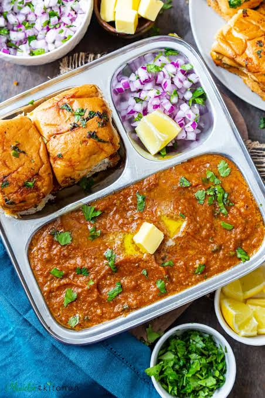

Pav Bhaji
Home

Description
Pav Bhaji is a famous Indian fast food consisting of a thick, spiced
vegetable curry (bhaji) served with soft, butter-toasted bread rolls (pav).
Originating as a quick meal for textile mill workers in 1850s Mumbai, it is
now a beloved comfort food and street snack enjoyed all across India
The Components:
- The Bhaji: A mashed, flavorful curry made from a mixture of boiled vegetables—typically
potatoes, peas, carrots, cauliflower, and capsicum—cooked in a rich onion and tomato gravy. It gets its
signature bright red color and robust flavor from a specific spice blend known as pav bhaji masala and
Kashmiri red chili powder.
- The Pav: Soft, pillowy bread rolls. They are generously pan-fried in butter on a flat griddle (or tawa) until lightly crispy and warm.
- The Accompaniments: It is typically served piping hot with a dollop of extra butter on the curry, freshly diced red onions, cilantro, and a wedge of lemon to squeeze over the bhaji for a tangy kick.
Ingredients:
- ½ cup vegetable oil
- 2 teaspoons chopped garlic
- 1 teaspoon finely chopped green chile peppers
- 1 cup chopped onions
- 2 teaspoons grated fresh ginger
- 1 cup chopped roma (plum) tomatoes
- 2 cups cauliflower, finely chopped
- 1 cup chopped cabbage
- 1 cup green peas
- 1 cup grated carrots
- 4 potatoes, boiled and mashed
- 3 tablespoons pav bhaji masala
- salt to taste
- 1 tablespoon lemon juice
- 8 (2 inch square) dinner rolls
- ½ tablespoon butter
- ¼ cup finely chopped onion
- 1 tablespoon finely chopped green chile peppers
- ¼ cup chopped fresh cilantro
Steps:
- Heat the oil in a wok over medium heat. Saute garlic and green chile for 30 seconds, then stir in onions and ginger. Cook until onions are brown. Add tomatoes, and cook until pasty. Stir in cauliflower, cabbage, peas, carrots and potatoes. Season with pav bhaji masala. Cover, and cook for 15 minutes, stirring occasionally. Season with salt, and stir in lemon juice.
- Toast the dinner rolls, and spread lightly with butter. Serve garnished with chopped onion, green chile and cilantro.